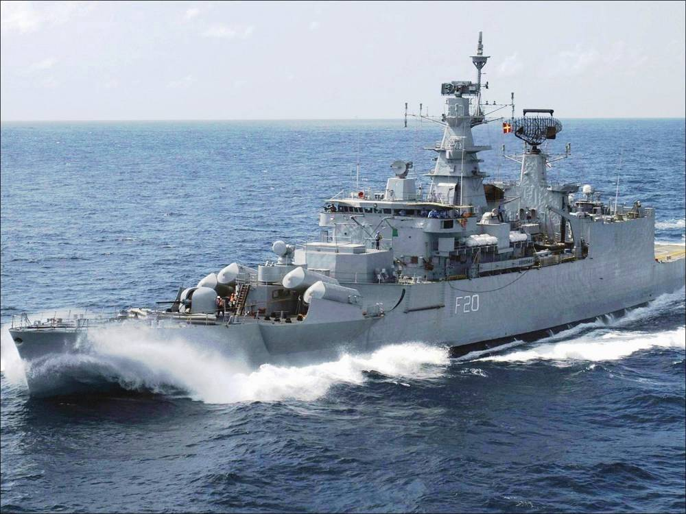

Service History
- Entry into service :
INS Godavari was commissioned on December 10, 1983. It was designed by the Indian Navy and built at Mazagon Dock Limited in Mumbai,
showcasing India's growing self-reliance in naval technology.
- Retirement :
After 32 years of distinguished service, INS Godavari was decommissioned on December 23, 2015.
Technical Specifications
- Displacement : Approximately 3,600 tons (full load).
- Dimensions : Length: 126 meters; Beam: 14.5 meters.
- Propulsion : Powered by two diesel engines and two gas turbines, producing 30,000 horsepower, which allowed a maximum speed of 27 knots (50 km/h).
- Speed : Capable of reaching speeds up to 32 knots (59 km/h).
- Armament :
- Missiles: Equipped with Styx surface-to-surface missiles and the Barak 1 surface-to-air missile system for air defense.
- Guns: Two AK-230 anti-aircraft guns, a 76mm OTO Melara main gun for surface engagements.
- Anti-Submarine Warfare (ASW): RBU-6000 anti-submarine rocket launchers and torpedo tubes for anti-submarine capabilities.
- Aircraft Capacity :
Had a flight deck and hangar to operate up to two helicopters, typically the Sea King or HAL Chetak, for ASW operations.
- Range : Operational range of 4,500 nautical miles (8,334 km) at a cruising speed of 18 knots.
- Crew : Approximately 313 personnel, including officers and enlisted sailors.
Historical Significance
INS Godavari holds a special place in the history of the Indian Navy as the first indigenously designed and built warship. Its successful construction
demonstrated India’s technological and industrial capabilities in shipbuilding, setting the foundation for future Indian-designed frigates and destroyers.
Godavari also served as a key asset for multi-role missions, from combat operations to humanitarian and peacekeeping support, significantly enhancing India’s naval reach.
Notable Missions
- Operation Jupiter (Sri Lanka): Deployed to support the Indian Peacekeeping Force in Sri Lanka by providing logistical and operational support, underscoring India’s commitment to regional stability.
- Operation Cactus (Maldives): In 1988, INS Godavari helped thwart an attempted coup in the Maldives by swiftly deploying naval assets and assisting in stabilizing the government. This mission underscored India’s role as a regional security provider.
- Anti-Piracy and Patrol Missions: As piracy grew in the Gulf of Aden, INS Godavari was regularly deployed on anti-piracy missions to protect Indian and international vessels, showcasing India’s commitment to securing sea lanes.
- Operation Parakram: During the 2001-2002 standoff with Pakistan, Godavari was part of the naval buildup along the western coast, helping maintain a robust defense posture.
- Naval Exercises: INS Godavari participated in multiple joint exercises, including Malabar with the U.S. Navy and Varuna with the French Navy, enhancing interoperability and strengthening India’s defense partnerships.